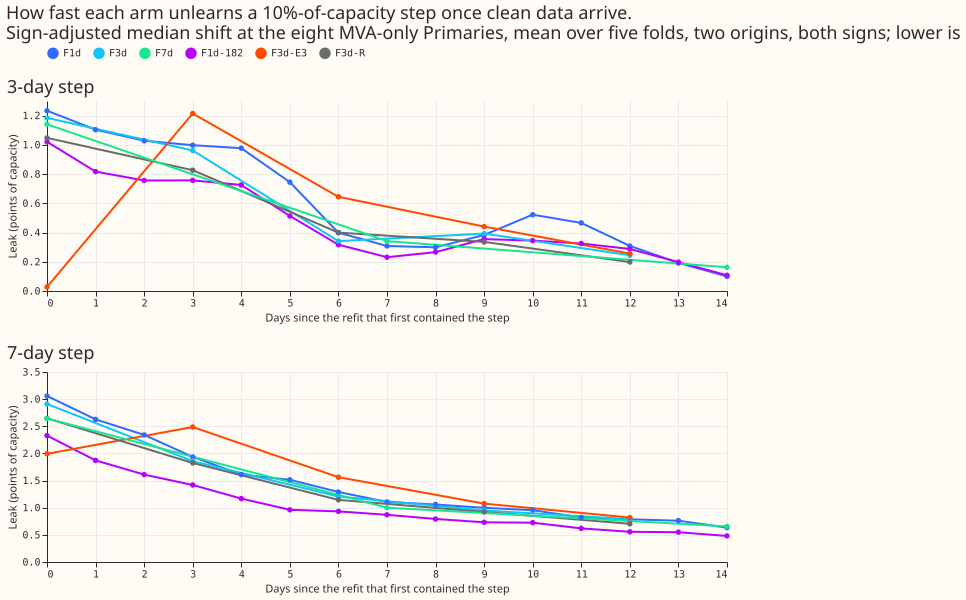
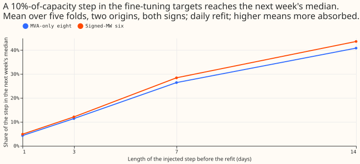
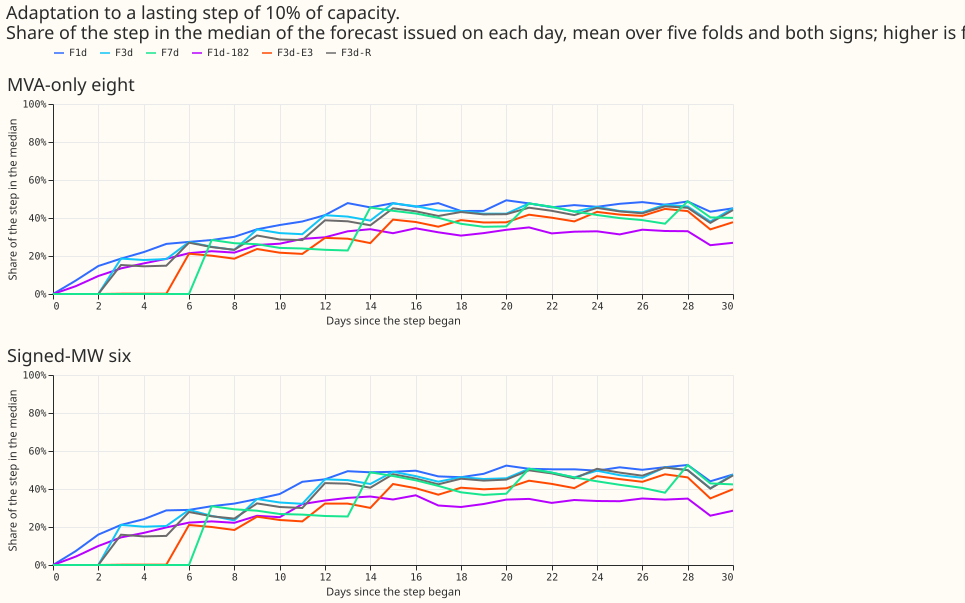
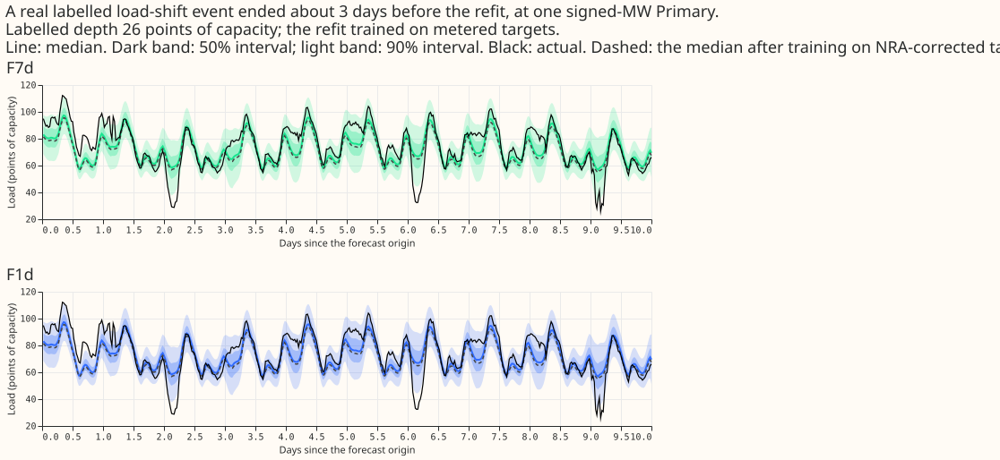
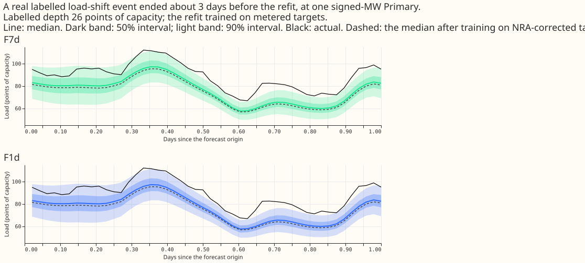
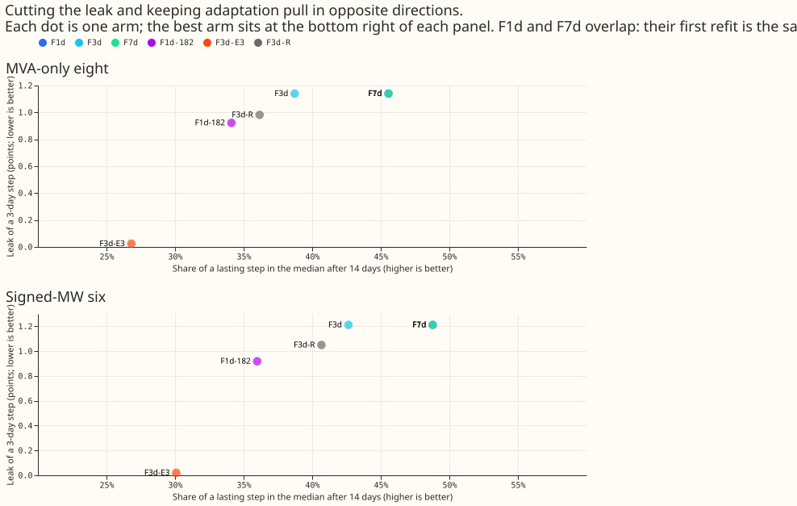
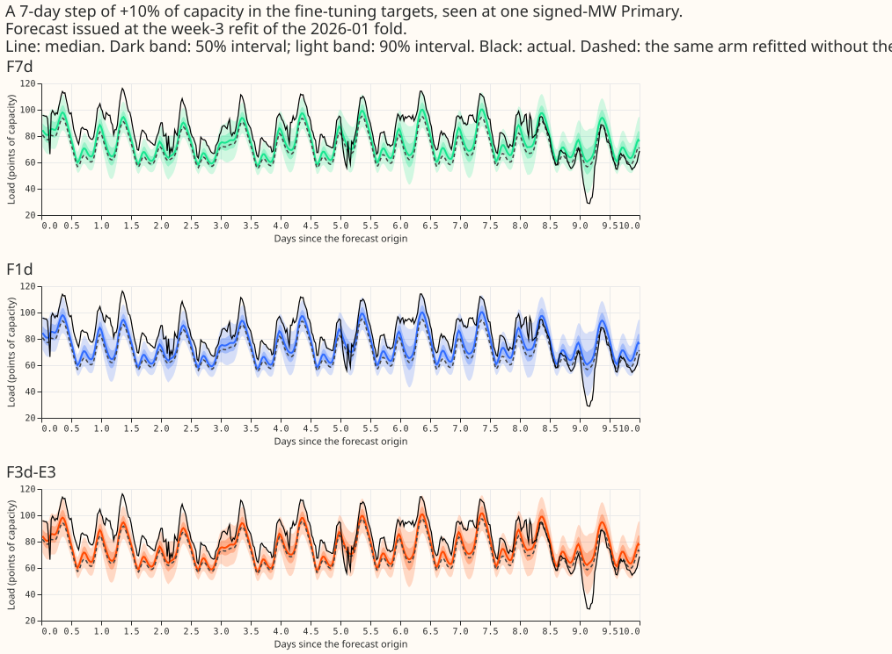
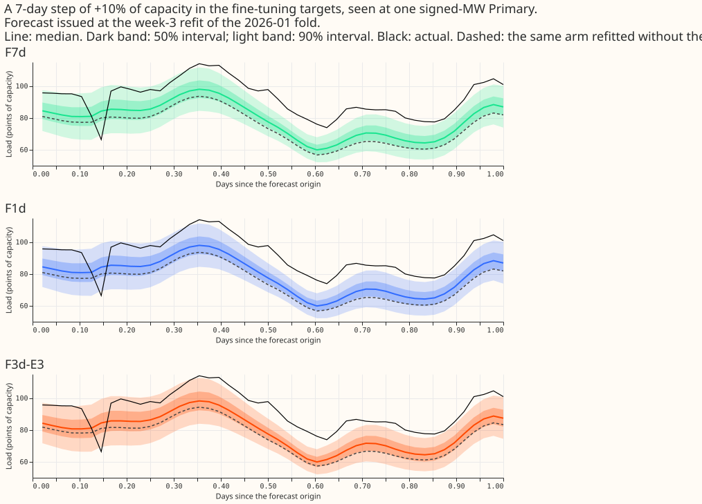

How much of a load-shift event does the lag-free demand neural network absorb through its fine-tune, and how fast does it unlearn the event?
A step added to the fine-tuning targets of the lag-free demand neural network reaches the next week's median forecast by a share that grows with the step's length, about one in ten for a 3-day step of 10% of capacity, and the effect fades over about 2 weeks. A real labelled event leaks 1.5% of its depth. We asked how much of a load-shift event in the rows a neural network is refitted on ends up in its next forecasts. We added a step of 10% of a Primary's capacity to the fine-tuning targets of the 16 Primaries, for the 1, 3, 7, or 14 days before a refit, and compared the median forecast with the matched refit without the step. We also fitted once on metered and once on corrected targets around 74 real labelled events, injected a lasting step, and scored two rules that might cut the leak: leaving the newest 3 days of targets out (F3d-E3), and shrinking the weight of rows far from the previous fine-tune's median (F3d-R).
Verdict: partly supported. Of the six pre-registered predictions, P1 (the leak rises with step length) and P6 (the real-event share is under 0.10) held; P2 (the daily leak is under 10% of its first value within 7 days), P3 (90% adaptation within 14 days), and P5 (F3d-R cuts the leak by 30%) failed; P4 passed on the leak (98% cut) and missed its CRPS bound (+0.057 and +0.051 against +0.05). The leak is real but small at realistic lengths, F3d-E3 removes it for short steps at a score cost just above the bar, and F3d-R does not reach the bar. F1d, F3d, and F7d refit daily, every 3 days, and weekly (F7d is L-Ww of experiments 510 and 511), and F1d-182 refits daily with a recency half-life of 182.6 days instead of 90. "The eight" are the MVA-only Primaries and "the six" the signed-MW Primaries. A "leak" is the sign-adjusted shift of the median, in points of capacity (percentage of each Primary's capacity). Scores use rows with no labelled event, two seeds, and five folds of 511 (2025-10, 2025-12, 2026-01, 2026-03, 2026-06).
Results
The leak grows with the step's length and does not depend on the refit cadence. The first refit after a step is the same fit for the daily, 3-day, and weekly arms, so the three arms share every first-refit number below; cadence matters only for the refits that follow. One seed, mean of five folds, two origins, and both signs.
| Step before the refit | Leak at the eight (points) | Share of the step | Leak at the six (points) | Share of the step |
|---|---|---|---|---|
| 1 day | 0.43 | 4% | 0.49 | 5% |
| 3 days | 1.14 | 11% | 1.21 | 12% |
| 7 days | 2.64 | 26% | 2.84 | 28% |
| 14 days | 4.08 | 41% | 4.36 | 44% |
| 3 days, alternating signs across Primaries | 0.62 | 6% | 0.62 | 6% |
- Reproduction of experiment 510: a step of 3 standard deviations of the 7-day mean over 7 days, at the week-3 origin and all 16 Primaries, moved L-Ww's median by 6.12 points (experiment 510: 6.11), and by 14.5 points in the 2026-01 fold.
- The stop rule did not fire: F1d's leak at L = 3 days is above 1.0 point in each of the first four lead bands (0 to 48 h) at both groups: 1.24 to 1.54 at the eight and 1.30 to 1.63 at the six.
- Bad data leak little: a 24 h stuck reading leaks 0.30 (eight) and 0.18 (six) points, a 6 h dropout 0.07 and 0.04, and a 6 h spike of 10 residual median absolute deviations 0.26 and 0.10.
- Noise: the standard deviation between the two signs' leaks for one fold and origin, over the square root of 2, is 0.1 to 1.0 points for the arms that leak. The leak is one seed per cell, so no leak difference smaller than about 1 point is read as an effect.
The leak fades over about 2 weeks at every cadence. After a 3-day step, the daily arm's leak at the eight falls from 1.23 points to 0.10 by day 14 (8%), and the weekly arm's from 1.14 to 0.16 (14%). Figure 2 shows all six arms. The leak halves by about day 6 for every arm except F3d-E3, whose leak starts near zero and rises to 1.21 at day 3. The first-refit values differ slightly by arm (1.23, 1.18, 1.14) because this series uses each refit's own window.


The neural network adapts slowly to a genuine lasting step. None of the six arms reached 90% of a lasting step of 10% of capacity in 29 days, the eight stayed under 50% (F1d 49% at day 28), and at the six F1d reached 50% on day 20, F3d on day 21, F7d on day 21, and F3d-R on day 24. F1d-182 and F3d-E3 never reached it. Early stopping on clean held-out weeks and the 90-day recency weight may explain the plateau; this experiment did not test either.

Real labelled events leak 1.5% of their depth. Over 74 events with a labelled depth, fitted once on metered and once on corrected targets (only the measured event corrected), the F1d fits absorbed a mean of 1.5% of the depth (median 0.3%; fold means 1.1%, 0.6%, 3.8%, 0.4%, and 1.1%; five-block interval 0.6% to 2.6%, narrower than the range of the fold means, 0.4% to 3.8%). Without the largest event the mean is 1.1% (interval 0.6% to 1.7%). One event absorbed 27.6% of its depth (a 22.9-point step aged 3.5 days, at one Primary in the 2026-01 fold). Among the other events of 10 points or more the largest share was 7.4%.


F3d-E3 passes the leak bar and misses the score bar by 0.007 points of CRPS at the eight; F3d-R misses the leak bar. Leak of a 3-day step at the eight (six): F3d 1.14 (1.21), F3d-E3 0.02 (0.02), F3d-R 0.98 (1.05), F1d-182 0.92 (0.92). F3d-E3 cuts the leak by 100% at 1 day and 98% at 3 days, by 34% at 7 days (1.74 against 2.64), and by 15% at 14 days. F3d-E3 delays adaptation by about 3 days (share of a lasting step after 3 days 0.1% against 19%, after 14 days 27% against 39%, after 28 days 44% against 46%). F3d-R cuts the leak of a 3-day step by 14% at the eight and 13% at the six.

| Arm | CRPS eight | CRPS six | minus L-Ww, eight (Bonferroni interval) | minus L-Ww, six | minus F3d, eight | minus F3d, six |
|---|---|---|---|---|---|---|
| L-Ww (F7d) | 4.920 | 3.555 | ||||
| F1d | 4.855 | 3.493 | -0.065 (-0.094, -0.039) | -0.061 (-0.100, -0.029) | ||
| F3d | 4.881 | 3.520 | -0.039 (-0.062, -0.018) | -0.035 (-0.069, -0.006) | ||
| F1d-182 | 4.923 | 3.558 | +0.003 (-0.066, +0.085) | +0.004 (-0.047, +0.050) | ||
| F3d-E3 | 4.939 | 3.571 | +0.019 (-0.004, +0.042) | +0.016 (-0.008, +0.039) | +0.057 (+0.035, +0.081) | +0.051 (+0.020, +0.085) |
| F3d-R | 4.890 | 3.551 | -0.030 (-0.058, -0.004) | -0.004 (-0.036, +0.023) | +0.009 (-0.008, +0.024) | +0.031 (+0.015, +0.047) |
- Tails: q99 pinball loss of every arm is within +0.0024 of L-Ww (limit +0.02); coverage of the
nominal 99% quantile is 98.5% to 99.6% for every arm at both groups. - Cold winter nights
(eight, six): L-Ww 4.348 and 3.494, F1d 4.224 and 3.434, F3d 4.283 and 3.481, F1d-182 4.308 and
3.555, F3d-E3 4.349 and 3.472, F3d-R 4.306 and 3.530. - Lead bands: F1d's CRPS is the lowest
of the six arms in all seven lead bands at the eight and in six of seven at the six, where F1d-182
is lower at 0 to 6 h (4.029 against 4.041; table in the data folder,
crps_by_band.csv). - Curtailment at the six (avoidable-curtailment cost in experiment 449's units, f = 0.9, 0.75, 0.5): L-Ww 0.95, 5.96, 22.26; F1d 0.73, 5.47, 21.43; F3d 0.75, 5.64, 21.77; F1d-182 0.88, 5.60, 21.58; F3d-E3 0.96, 6.04, 22.46; F3d-R 0.96, 5.98, 22.04. - Minimum detectable effect: CRPS 0.164 (eight) and 0.123 (six), carried from experiment 510's two seeds, not refitted. The CRPS contrasts of F3d-E3 and F3d-R against F3d are below it, so they read as "interval excludes zero", not as "at least this large".


Serving complexity
Every arm serves one neural network per forecast pass. F1d and F3d refit daily or every 3 days (a fine-tune of about 3 s). F3d-E3 is the F3d schedule with the newest 3 days of targets left out, which an operator can read as "never learn from the last 3 days". F3d-R is the F3d schedule with each row's weight multiplied by min(1, 3 / |z|), where z is the row's residual against the previous 3-day fine-tune's median in units of the Primary's residual median absolute deviation over 90 days. The CRPS difference against L-Ww is in the table above. Comparisons with K2-S1 are not reported: K2-S1's forecasts beyond 24 h of lead are voided (the correction at the top of experiment 511's page).
Checks
- Median minus mean forecast: not computed; the arms output quantiles of one mixture and no mean forecast, so the check does not apply. - Quantile score against error of the median: CRPS and q99 pinball loss against L-Ww point the same way for F3d-E3 at the eight (zero) and F3d-R at the eight (both lower), and differ in sign for F3d-R at the six (CRPS -0.004, q99 +0.0024), where both intervals include zero. - Triggers fired: none. The reproduction of 510's 6.11 passed (6.12). A code review before the first run is triaged below. - Look-ahead: for each arm, the rows selected at 2026-01-11 had 0 rows past the valid-time cut (cutoff minus 3.5 h) and 0 past the origin cut; the example row has valid time 2024-04-11 05:00, origin 2024-04-10 09:00, cutoff 2026-01-11. The fine-tune of F1d at 2026-01-10 reproduced the stored weights of experiment 511 to 8e-5 points in the median (maximum).
Caveats
- Deviations from the pre-registered plan: one seed for every stress cell, no stored two-seed
leak interval, and the leak contrasts use the sign-pair noise above; F1d-182 skipped the bad-data
cells and the 1-day, 14-day, 3-standard-deviation, and alternating-sign cells, and F3d-E3 and
F3d-R skipped the bad-data cells, to stay within the compute cap; the unmirrored injection hits
all 16 Primaries together (the plan's "donor and recipient" wording was implemented as all
Primaries, and the mirrored sensitivity as alternating signs). - Not computed: curtailment
differences against L-Ww, F1d, and BG2 with block intervals (only the absolute costs above and the
script's differences against K2-S1 and the manual heuristic); the "harm rows" of the
pre-registered plan; the fold-by-fold signs of the CRPS contrasts beyond what the stored table
holds. - The unlearn time of F3d-E3 is not comparable: its first refit contains no leak by
construction at L of 3 days or less, so "days to 10% of the first value" has no meaning for it. -
F3d-R's reference is the plain F3d fit 3 days earlier under the same injection, with the
residual median absolute deviation computed in-sample, which makes the clipping stricter than an
out-of-sample rule would. - A "1-day" step covers 20.5 h because the newest training targets
are 3.5 h old at the refit. - The lasting step's first refit contains no injected row, so day
0 reads zero by construction. - The labels are incomplete: unlogged load-shift events may sit
in the fine-tuning windows, so every leak here is a lower bound for the real leak and the
real-event counts are lower bounds. - Horizon: the scores cover leads of 0 to 240 h; the leak
is reported by the seven lead bands in the data folder (
leak_by_band.csv).
Triage of the code review
A fresh Sonnet agent reviewed e00556_fit.py before the first run. Accepted: the stuck-reading
sign (the leak is read along each Primary's realised injection direction), the stuck-reading
start index and its silent-zero case (now the last finite reading, with an assertion), the wrong
return annotation, float64 sums, and runtime assertions for the look-ahead cut and for injected rows
being non-empty. Rejected: stricter gating of the run on the reproduction check (the check passed
and is in "Checks"); the in-sample residual deviation of F3d-R, kept and caveated; the 20.5 h step
and the zero day-0 adaptation, kept and caveated.
What to try next
An experiment that explains the plateau of adaptation, by fine-tuning without early stopping on the clean held-out weeks and with a shorter recency half-life, is the next test; the shorter half-life was already shown in experiment 511 to raise the leak, so the pair of results would fix the trade-off.